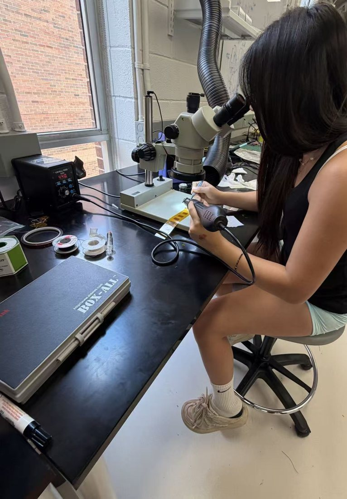

ECE 1100 ePortfolio · Welcome
Hi, I’m Joyce.
I’m a junior in Electrical Engineering at Georgia Tech, and I like hardware I can point to. A chip layout that finally shows zero DRC errors. A flex board I soldered under a microscope. A breadboard circuit that reads the number I calculated by hand.
This site is my ePortfolio for ECE 1100. It covers who I am, what I’ve built, the Discovery Project I did this semester, and where I’m headed next. If you’re a recruiter, my resume is one click away and you can download it as a PDF.
- Degree
- B.S. Electrical Engineering, Georgia Tech
- Threads
- Signal & Information Processing + Circuit Technology
- GPA
- 4.0 / 4.0
- Graduation
- Expected May 2028
- Focus
- ASIC physical design and verification, hardware test, board-level design

//Where to start
About me
Where I grew up, what I do on campus, and what I do when I’m not in the lab.
Read more → 02 / PROJECTSProjects
A 64-bit calculator ASIC, a RISC-V CPU, a wearable EMG flex board, and more.
See projects → 03 / FEATUREDDiscovery Project
A Wheatstone bridge sensor circuit, from hand math to LTspice to a real breadboard.
Open the feature → 04 / RESUMEResume
View it right on the page or download the PDF.
View resume → 05 / GOALSCareer goals
The hardware roles I’m aiming for and my plan through graduation.
See the plan → 06 / CONTACTContact
Email, LinkedIn and GitHub. I’m happy to talk about any of this work.
Get in touch →